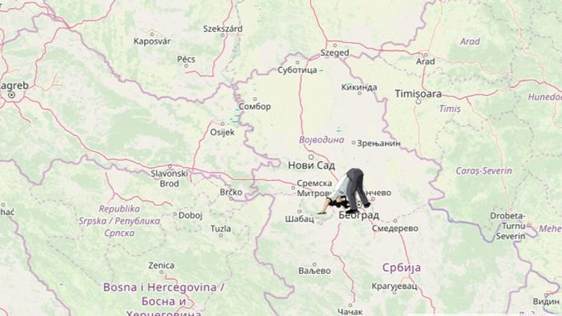

Šta se nalazi na suprotnoj strani planete?
Ili drugim rečima, gde biste izašli kada biste krenuli da kopate tunel iz vašeg grada kroz središte Zemlje.

Jeste li se ikada zapitali gde biste završili da počnete da kopate tunel pravo kroz središte Zemlje?
Time više ne morate da razbijate glavu jer internet stranica www.antipodesmap.com pokazaće vam tačnu lokaciju koja je dijametralno suprotna vašem stajalištu, odnosno vaš antipod.
Na primer, oni koji bi počeli da kopaju u Argentini, prokopali bi sebi put do Kine. Da biste završili na Havajima, morate uzeti "lopatu u ruke" u Bocvani.
A iz bilo kog dela Srbije, put preko središta Zemlje vodi u beskraj južnog Pacifika, hiljadama kilometara istočno od Novog Zelanda.